開發案例
冉冉晴嶼：頭城 12 席獨棟建築
從找到這塊地，到初步規劃設計、價格分析與財務可行性評估，都由冉冉國際負責。這塊宜蘭頭城烏石港周邊的空地，規劃為 12 席獨棟建築，已取得建造執照，目前一期興建中。

宜蘭的土地
稻田、河流、山腳下的聚落，和一路延伸到海邊的平原。我們在宜蘭看地、飛過一塊又一塊土地，也知道對地主來說，那往往是好幾代人的記憶。先看見它原本的樣子，再一起想它的下一步。
01 / 05
核心業務
從宜蘭的土地，到雙北的都更與商辦，我們用同一套方法：先查清楚、算清楚，再談交易。

冉冉國際最主要的業務。從找地、土地研究與開發規劃，到合作開發與土地交易，冉冉晴嶼就是我們從一塊空地做起的案例。

老房子的地主與住戶，最在意能分回多少、要等多久。我們從都更可行性與容積分析開始，協助整合土地、擬定策略，並管理開發進度。

商辦的價值，看的是租金、價格與持有成本。我們提供資產評估與投資分析，並協助買賣過程中的每一個環節。

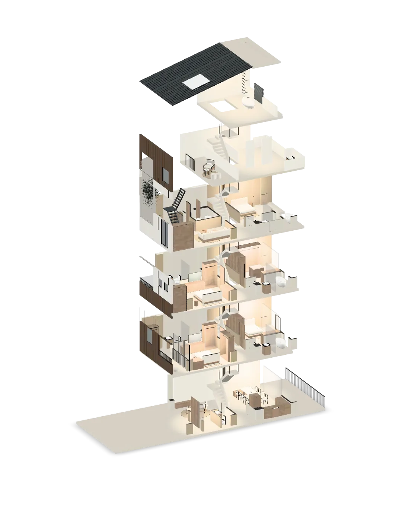
開發案例
從找到這塊地，到初步規劃設計、價格分析與財務可行性評估，都由冉冉國際負責。這塊宜蘭頭城烏石港周邊的空地，規劃為 12 席獨棟建築，已取得建造執照，目前一期興建中。
樓梯動線、採光、陽台與每一層的用途，都在初步規劃設計時一起決定。
空間怎麼配置，會直接影響產品價格與銷售對象。所以我們在規劃階段，就把設計和價格分析、財務可行性評估放在一起看。
冉冉晴嶼 TYPE-01 建築 3D 模型示意（非施工圖面）
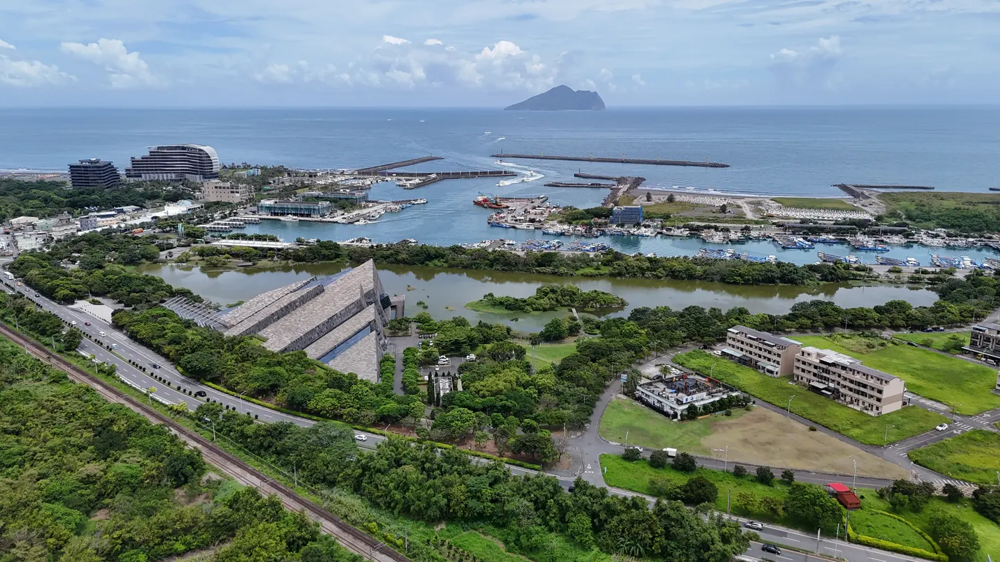
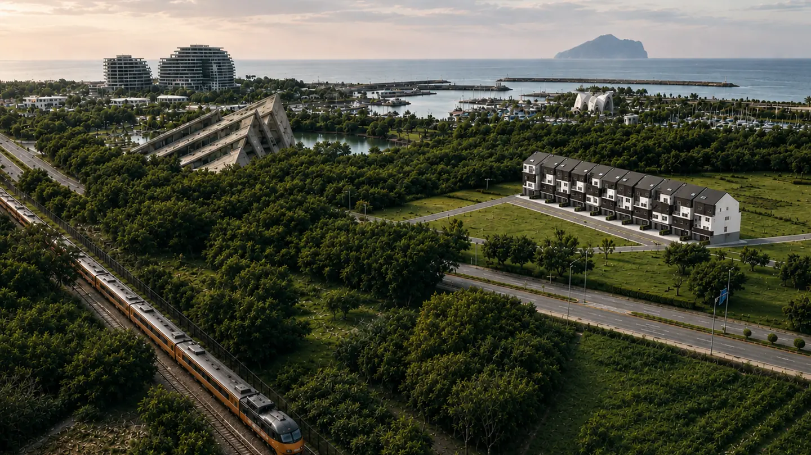
可行性評估
每一塊土地的條件都不同。以我們負責的冉冉晴嶼為例，說明我們評估一塊土地的順序。
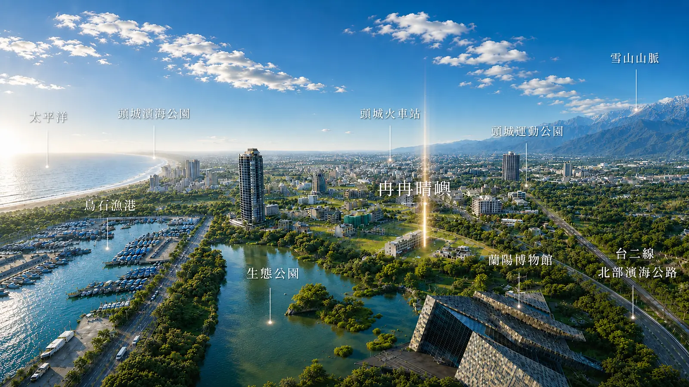
從位置、交通、景觀、周邊設施與地區未來的發展，判斷一塊土地值不值得做。
冉冉晴嶼的土地由我們找到：宜蘭頭城烏石港周邊，前方是海，遠方是龜山島。
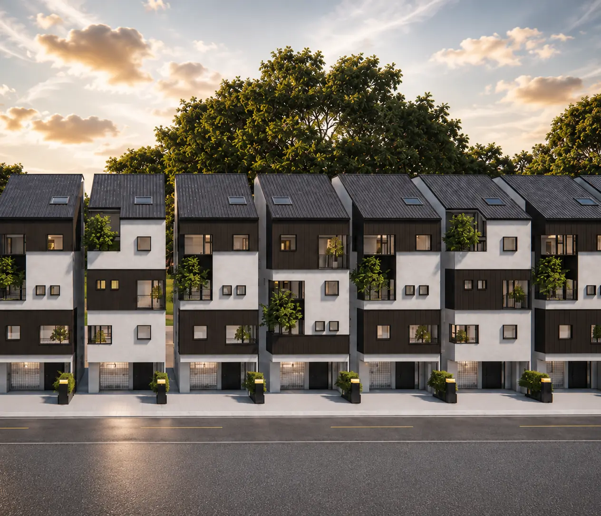
確認使用分區、建蔽率、容積率、退縮與高度限制，算出這塊地能蓋多大、能怎麼分配。
我們為冉冉晴嶼做的量體研究，最後定案為 12 席獨棟建築，並取得建造執照。
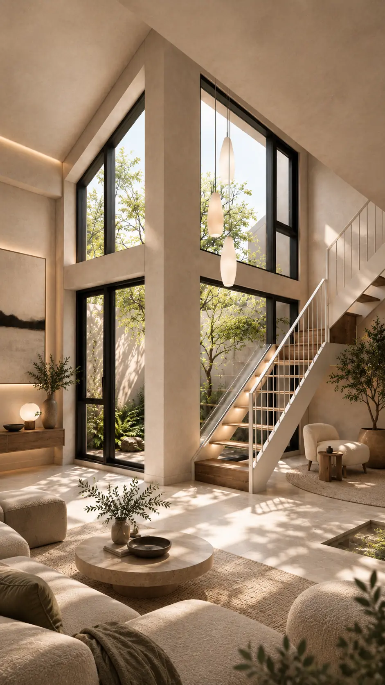
初步規劃設計決定一棟建築的個性，也決定它在市場上的位置。冉冉晴嶼的設計概念是：
台：留一個位置，給自己。
井：讓時間，重新被感覺。
院：留一點空間，讓生活自己發生。
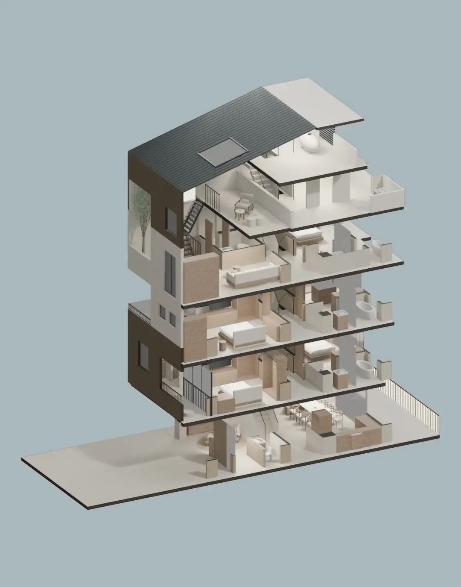
把設計概念落到實際的樓層與空間：樓梯動線、採光、陽台與每一層的用途。
空間怎麼配置，會直接影響產品價格與銷售對象。
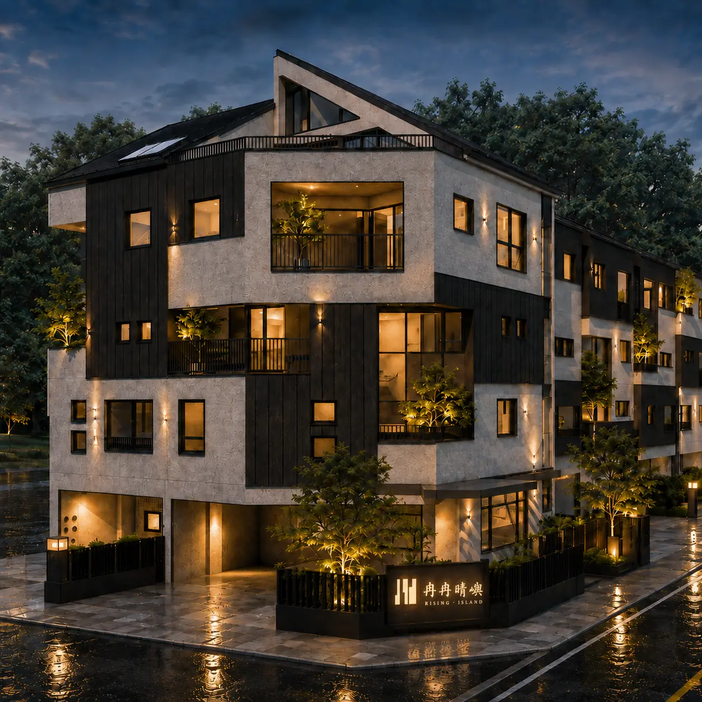
分析周邊成交價格，把土地成本、營建成本、銷售價格與時程放在一起試算，確認可行，才進入設計定案與申請建照。
冉冉晴嶼的價格分析與財務可行性評估由我們完成，目前一期興建中。
以下皆為建築或室內示意圖（3D 渲染，非實景）。實際以核准圖說為準。
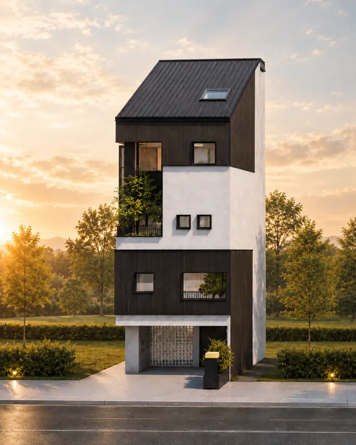
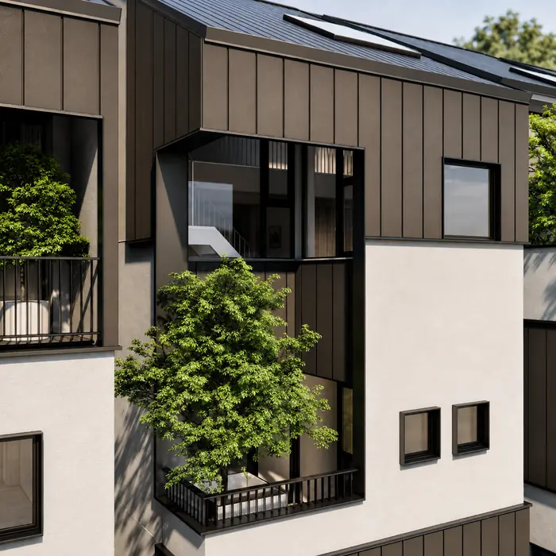
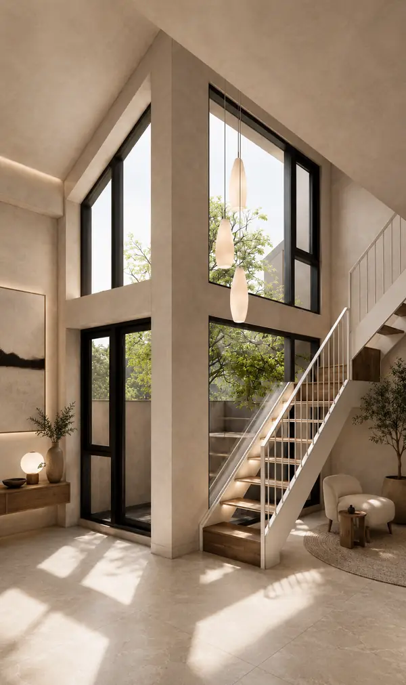
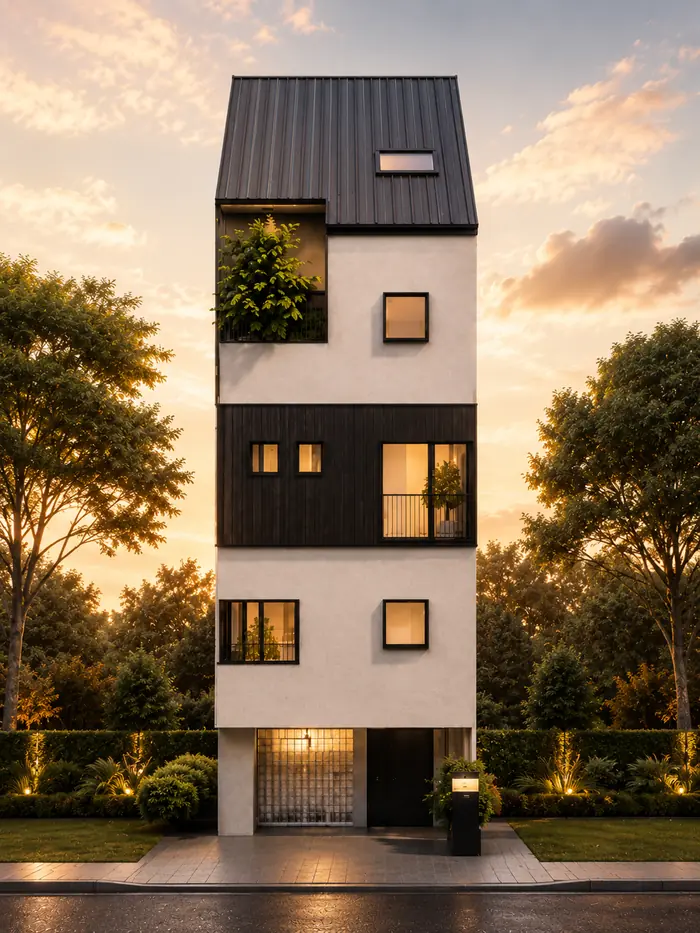
處理方式沒有標準答案。我們會依土地條件與你的需要，說明每一種方式的利弊。
我們的態度
一塊地能做什麼、值多少，不是查表就有答案。我們把法規、量體和空間配置一筆一筆畫出來，再一層一層做成模型，反覆推敲，直到找出最適合它的樣子，也就是它最大的價值。


使用分區、建蔽率、容積率與退縮，先在圖面上算出能蓋多大、怎麼配置。
用模型檢查比例、採光，以及每一層實際怎麼使用。
設計和價格分析、財務可行性一起看，確認這份價值站得住。
聯絡我們
留下姓名和電話，或直接來電。不需要先準備權狀，我們會先聽你說，再一起看看這塊地可以怎麼走。